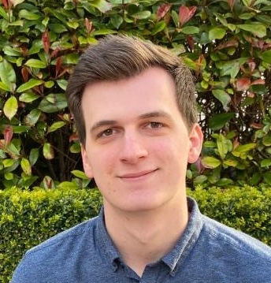

Software Engineering · Digital Twins · Machine Learning · Multi-Objective Optimisation
Hi! I am currently a postdoctoral researcher in the programming and software engineering group at University of Regensburg. In this position, I conduct research in model-driven software engineering and digital twins.
I have a strong background in software engineering, metaheuristic optimisation, and machine learning on graph structures due to my doctoral research. I've used my experience in an interdisciplinary collaboration with agri-sustainability researchers at the University of Galway.
Outside of the academic world, I am an amateur football player and enjoy an occasional game of chess.
Learning Graph Configuration Spaces to Support Road Network Design Optimisation
Michael Mittermaier, Takfarinas Saber, Goetz Botterweck
The Genetic and Evolutionary Computation Conference (GECCO), 2025
DOI 10.1145/3712256.3726447
Learning Graph Configuration Spaces in Engineering Domains
Michael Mittermaier
PhD thesis, 2025
Tara 2262/111898
Applying Graph Neural Networks to Learn Graph Configuration Space
Michael Mittermaier, Takfarinas Saber, Goetz Botterweck
Conference on Variability Modelling of Software-Intensive Systems (VaMoS), 2025
DOI 10.1145/3715340.3715444
Learning Graph Configuration Spaces with Graph Embedding in Engineering Domains
Michael Mittermaier, Takfarinas Saber, Goetz Botterweck
The 9th International Conference on Machine Learning, Optimization, and Data Science, 2023
DOI 10.1007/978-3-031-53966-4_25
Email: michael.mittermaier ( at ) ur.de